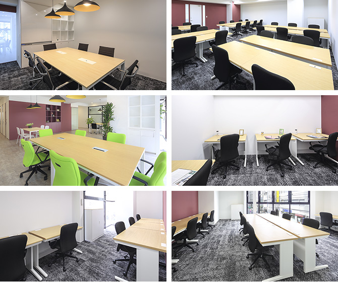

【個室レンタルオフィス】
オープンオフィス五反田駅西口
オープンオフィス五反田駅西口がNEW OPEN
オープンオフィス五反田駅西口センターは、JR「五反田駅」西口より徒歩4分、駅前通り（ゆうぽうと通り）に面した五反田サンハイツビルというロケーションです。
五反田駅から山手通りまでのエリアは、西五反田のビジネスエリアであり金融機関や生命保険会社のオフィスビルが建ち並びます。
オープンオフィス五反田駅西口が提供するオフィスサービス
-
 高速インターネット＜光ファイバー＞
高速インターネット＜光ファイバー＞
- 100Mbpsの光ファイバーによるブロードバンド環境をご用意しました。各部屋に配線済みですので、パソコンに繋げばすぐLAN経由で高速インターネットを利用出来ます。
-
 ネットワーク・カラーレーザープリンタ+スキャナー
ネットワーク・カラーレーザープリンタ+スキャナー
- ネットワークを利用して、各お部屋のパソコンから印刷できます。プリンタをご用意いただく必要もございません。
スキャナー機能も搭載しております。
-
 カラーレーザーコピー
カラーレーザーコピー
- フロア内にご用意してあります。カード方式でコピーが出来ますので、小銭の準備が不要です。
-
 ICカードキーによる入室管理
ICカードキーによる入室管理
- 専用ICカードを使ったホテル式のスマートシステムを用いて、セキュリティーを向上させています。
-
 ミーティングルーム（会議室）
ミーティングルーム（会議室）
- 商談・会議にご利用いただける共有スペースをご用意しています。インターネットで簡単に予約をしていただけます。
-
 無線LAN（WiFi）
無線LAN（WiFi）
- 共有スペースとミーティングスペースにて、無線LAN(WiFi)サービスをご利用いただけます。

オープンオフィス五反田駅西口の特徴

人気ビジネスエリア「五反田」
IT企業の進出で注目高まる
支店・営業所としても最適なロケーション
首都高速中央環状品川線の開通で利便性アップ
渋谷エリア、品川エリアに隣接
オフィス周辺のMap
オープンオフィス五反田駅西口近隣のスポット
- ■銀行
- 三菱UFJ銀行 五反田支店
三井住友銀行 五反田支店
りそな銀行 五反田支店
横浜銀行 五反田駅前支店 - ■レストラン
- 東京オイスタバー（オイスター）
芳寿司（寿司）
ヨシズハイ（イタリアン）
メイ（フレンチ）
鉄板焼き 梨の家（ステーキ） - ■ホテル
- 東急ステイ五反田
ホテルマイステイズ五反田
アリエッタ ホテル＆トラットリア
京王プレッソイン五反田 - ■レジャー
- コナミスポーツクラブ五反田
ティップネス五反田 - ■映画館
- Ｔ・ジョイPRINCE品川
オープンオフィス五反田駅西口の住所・アクセス
- 住所:
- 東京都品川区西五反田1-26-2 五反田サンハイツビル 2F
- 空港からのアクセス:
- 羽田空港よりリムジンバスで「大崎」まで約35分 JR山手線で「五反田駅」まで2分
羽田空港より京浜急行で「品川駅」経由、JR山手線で「五反田駅」まで約25分
成田空港よりリムジンバスで「大崎駅」まで約75分 JR山手線で「五反田駅」まで2分
- 電車からのアクセス:
- JR山手線、都営地下鉄浅草線「五反田駅」西口より徒歩4分
東急池上線「大崎広小路駅」より徒歩3分 - お車でのアクセス:
- 五反田駅西口、桜田通りより一本入る ゆうぽうと通り面す
オープンオフィス五反田駅西口のフロアマップ
2F

※フロア内は禁煙です。
※こちらはイメージ図となりますので、状況が異なる場合は現況を優先させていただきます。
- ◆初回納入金
- 利用料1ヶ月分の保証金
- ◆共益費
- 水道光熱費、ビル共益費、ゴミ出し、フロア・トイレの清掃、共有部分の消耗品代を含みます。
リージャスグループの説明
リージャス・グループは、柔軟なワークスペースを提供する世界最大の企業です。そのネットワークは世界120カ国1,100都市、3300拠点に及びます。会員数は250万人で、業界で成功を収める大小様々な企業や起業家の方々にご利用いただいています。
リージャスは、個室タイプのレンタルオフィス、コワーキングスペースなど多彩なオフィスプラン、近年需要が高まるモバイルワークやバーチャルオフィス、障害復旧サービスの提供を通じ、お客様が予算やワークスタイルに合わせて仕事を行うことができる環境を提供いたします。